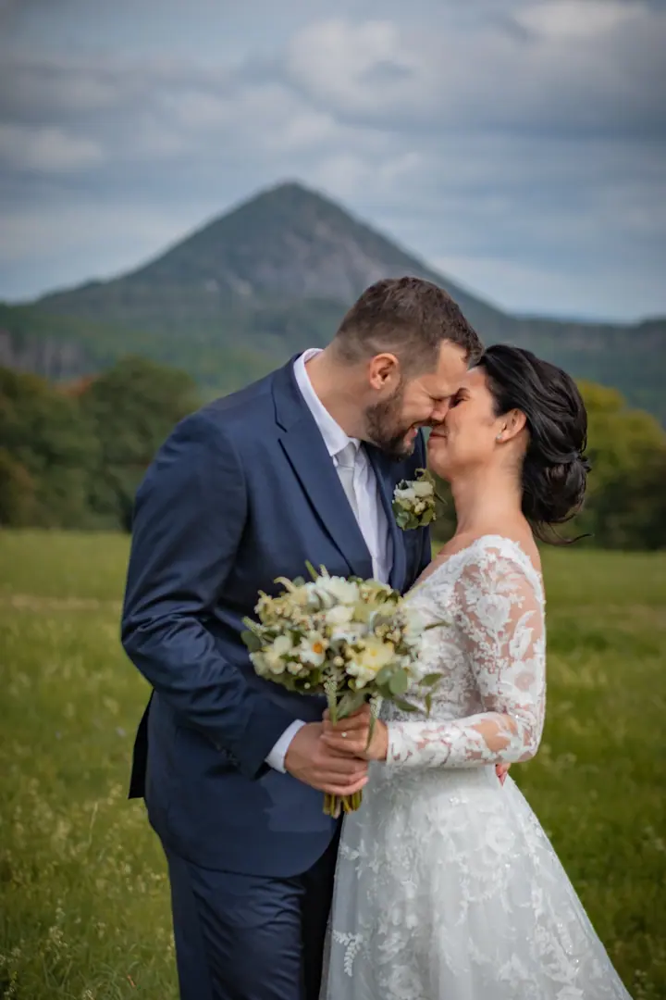
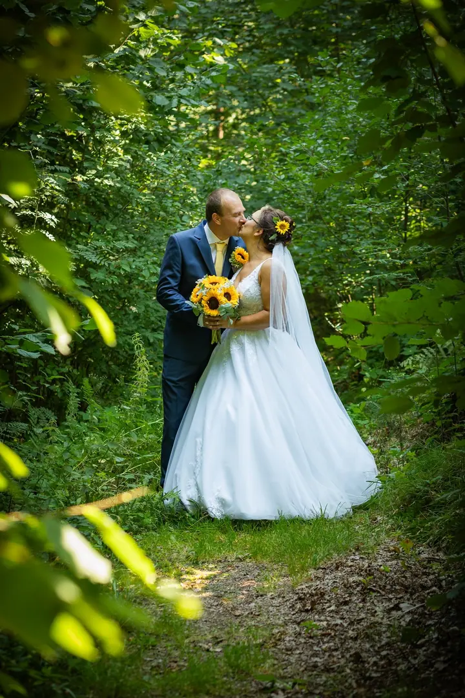

jedna
Svatby
Přirozené svatební fotografie plné emocí, od příprav a obřadu až po první tanec a házení kytice. Vybrat si můžete balíček Mini, Klasik nebo All-in podle toho, jak dlouho mám být s vámi.

Svatební a rodinná fotografka · Liberecký kraj, Český ráj, Severní Čechy

Jmenuji se Dominika Skubová a fotím svatby v Libereckém kraji, v Českém ráji a po celých severních Čechách. Jsem veselá fotografka, která se nebojí experimentovat, a pro dobrou fotku vlezu i do vody.
Více o mně
Co fotím
jedna
Přirozené svatební fotografie plné emocí, od příprav a obřadu až po první tanec a házení kytice. Vybrat si můžete balíček Mini, Klasik nebo All-in podle toho, jak dlouho mám být s vámi.
dvě
Focení v přírodě, při kterém se snažím, aby atmosféra byla co nejvíc uvolněná a vynikly přirozené úsměvy. Pejsky fotím staticky, v pohybu při aportu nebo společně s vámi.
tři
Jemné pózy s vaším bříškem a příjemné prostředí. Tak si na fotografiích uchováte čas, kdy čekáte miminko.
Kromě focení vám připravím i kompletní svatební tiskoviny: oznámení, pozvánky a uvítací kartičky pro hosty. Navrhuji také vizitky a plakáty.
Pro dobrou fotku vlezu i do vody.


Za objektivem
Ahoj, jmenuji se Dominika a fotografování se věnuji už 10 let. Vystudovala jsem obor Reprodukční grafik pro média na SOŠ Mediální grafiky a polygrafie v Rumburku, takže mi blízká není jen fotka, ale i všechno kolem ní. Proto si občas říkám foto-grafička.
Vždycky se snažím přizpůsobit tomu, co potřebujete vy. Zajistím veškerou techniku i následnou postprodukci a každou fotku upravuji ručně. Věřím, že každá fotografie je originál a že každý má objektivu co nabídnout.
Nejčastěji mě potkáte v Libereckém kraji, ale po domluvě ráda vyrazím i jinam. A když budete chtít, navrhnu vám k fotkám i svatební oznámení, pozvánky a další tiskoviny, ať je všechno z jedné ruky.
Dominika
Napíšete mi a domluvíme se na termínu. Svatební termín potvrzuje záloha 1 000 Kč, která se při zrušení ze strany klienta nevrací.
Probereme místo, průběh focení i vaše představy, abychom společně vytvořili prostředí, ve kterém vzniknou ty nejoriginálnější snímky.
Přijedu s veškerou technikou a fotím uvolněně a přirozeně. Když je potřeba, pro dobrou fotku vlezu i do vody.
Všechny fotky pečlivě upravím a pošlu vám je v plné kvalitě pro tisk i web, a to přes úschovnu nebo e-mailem. Dodání trvá minimálně 3 týdny.
Portfolio
Fotografie jsou ilustrační
Otázky
Svatba Mini (cca 4 hodiny) stojí 9 000 Kč, Klasik (cca 6 hodin) 14 000 Kč a All-in (9 a více hodin) 18 000 Kč. Podle balíčku dostanete 150 až 500 upravených fotografií.
Nejčastěji fotím v Libereckém kraji, ale po domluvě přijedu i jinam. Do 20 km je doprava zdarma, dál účtuji 8 Kč/km.
Neupravené fotografie neposkytuji. Dostanete jen pečlivě upravené snímky v maximální tiskové kvalitě. Další fotku navíc si můžete dokoupit za 400 Kč.
Ano, grafika je moje dlouholetá práce. Navrhnu vám oznámení, pozvánky i uvítací kartičky pro hosty. Cena se odvíjí od rozsahu a náročnosti v hodinové sazbě.
Napište pár vět o tom, co si představujete. · +420 732 864 399